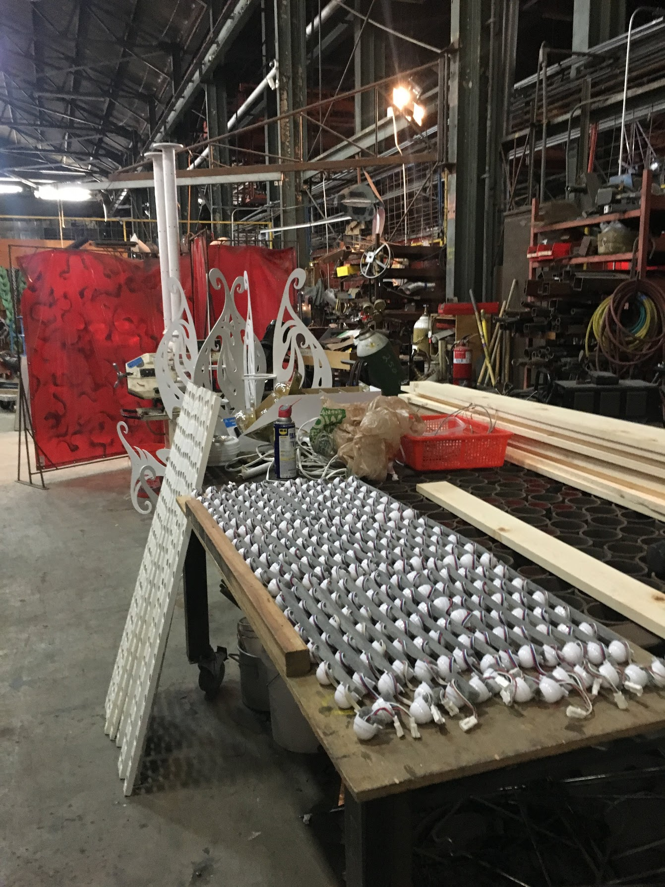
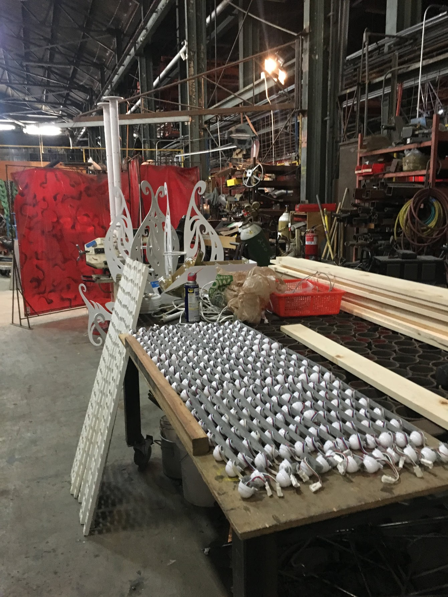

Involvement
- Dreamland’s lamp poles were reconfigured with edison bulbs, and two were wirelessly connected to create an physically disjoint set of social furniture benches that allowed participants to interact with the other benches lights.
Links


